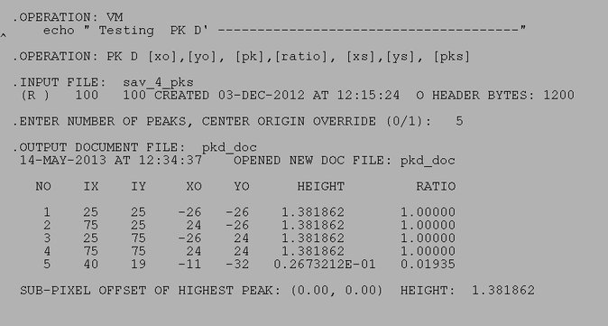

| .OPERATION: | PK D [ix],[iy], [pk],[ratio], [xo],[yo], [pkp] | ; Search for 4 highest peaks in image |
| .INPUT FILE: | sav_4_pks | ; Image (input) |
| .NUMBER OF PEAKS, CENTER ORIGIN OVERRIDE (0/1): | 5, 0 | ; Want 5 highest peaks |
| .DOCUMENT FILE: | pkd_doc | ; Image (input) |
| INPUT IMAGE |
|---|
| sav_4_pks |
| RESULTS FILE |
|---|
|  |
| pkd_resu |
| DOC FILE |
|---|
| |
| pkd_doc |